Tarihçe
Türkiye Cumhuriyeti'nin topraklarını oluşturan bölgenin tarihi olarak anlaşılan Türkiye tarihi, hem Anadolu'nun hem de Doğu Trakya'nın tarihini içerir. Daha önce siyasi olarak farklı olan bu iki bölge, MÖ 2. yüzyılda Roma İmparatorluğu'nun kontrolü altına girdi ve sonunda Bizans İmparatorluğu'nun çekirdeği haline geldi. Osmanlı döneminden önceki zamanlar için, Türk halklarının tarihi ile şimdi Türkiye Cumhuriyeti'ni oluşturan toprakların tarihi arasında da bir ayrım yapılmalıdır. Türkiye'nin bazı bölümlerinin Selçuklu Hanedanı tarafından fethedildiği zamandan bu yana, Türkiye tarihi Selçuklu İmparatorluğu'nun orta çağ tarihini, Osmanlı İmparatorluğu'nun orta çağdan modern tarihini ve 1920'lerden bu yana da Türkiye Cumhuriyeti'nin tarihini kapsar.
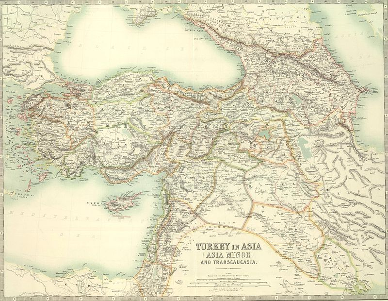Tarih öncesi Anadolu ve Doğu Trakya
Günümüzde Türkiye sınırları içinde kalan Anadolu Yarımadası, dünyanın en eski insan yerleşimi bölgelerinden biridir. Çeşitli Eski Anadolu milletleri, bölgede Cilalı Taş Devri'nin başlangıcına ve Büyük İskender'in askeri fetihlerine kadar varlığını sürdürdü. Bu halkların çoğu Hint-Avrupa dil ailesinin bir kolu olarak kabul edilen Anadolu dillerini konuştular. Bazı bilim insanları, Hint-Avrupa dillerinin, yine eski Anadolu dillerinden olan Hitit dili ve Luvi dilinden yayıldığını öne sürmüştür. Ayrıca Türkiye'nin Avrupa kıtasında kalan küçük bir bölümünü oluşturan Doğu Trakya ise, 40 bin yıl öncesine dayanan bir yerleşim tarihine sahiptir ve bölgenin sakinleri de tarıma başlayarak milattan 6000 yıl önce Cilalı Taş Devri'ne geçmiştir.
Geçmişi yaklaşık MÖ 10.000 tarihine kadar uzanan ve Şanlıurfa il merkezinin sınırları içerisinde bulunan Göbeklitepe, ülke toprakları üzerindeki bilinen en eski dini yapının bulunduğu yerdir. Geçmişinin MÖ 7500'e veya MÖ 5700'e dayandığı sanılan Orta Anadolu'daki Çatalhöyük, Cilalı Taş Devri ile Bakır Çağı'na ait çok büyük bir yerleşim yeridir ve en iyi korunmuş Cilalı Taş Devri kenti ilan edilerek Temmuz 2012'de UNESCO Dünya Mirasları Listesi'ne dahil edilmiştir. Diyarbakır'ın Ergani ilçesi sınırlarında bulunan ve geçmişinin MÖ 8200-6000 arası olduğu tahmin edilen Çayönü yerleşkesi de, bu yapılara yine örnek verilebilir. Çanakkale'de bulunan Troya Antik Kenti'nde ise Cilalı Taş Devri'nde başlayan yerleşmeler, Demir Çağı'na kadar devam etmiştir.
Göbeklitepe'deki bazı taşlar, MÖ 12.000 yıllarında dikilmiştir.
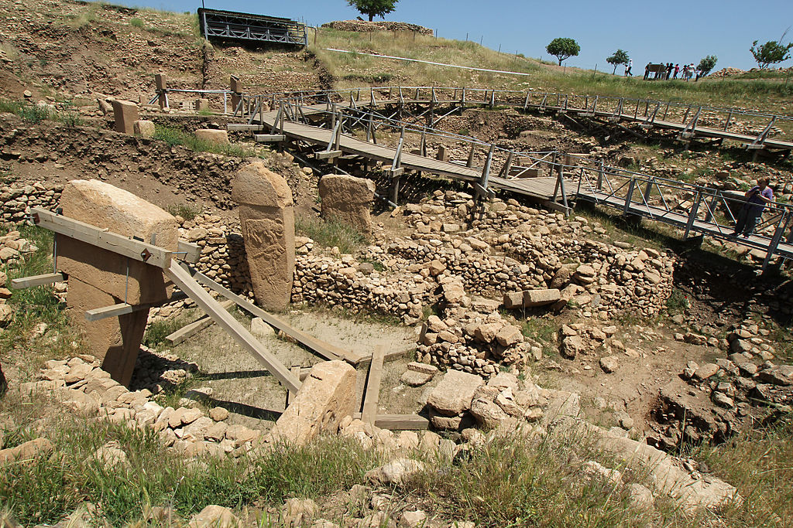Anadolu'nun bilinen ilk sakinleri, Hatti ve Hurri toplumlarıdır. Hint-Avrupa milletlerinden olmayan bu iki toplum, yaklaşık olarak MÖ 2300'lü yıllarda Orta ve Doğu Anadolu'da yaşadılar. Hatti ve Hurriler, Hint-Avrupa milletlerinden Hititler'in MÖ 2000-1700 yıllarında Anadolu'ya gelmesiyle yerini Hititlere bıraktı. Hititler, bölgedeki ilk büyük krallığı MÖ 13. yüzyılda kurdular. Asurlular da, MÖ 1950'den MÖ 612'ye kadar günümüz Türkiye'sinin güneydoğu topraklarını fethetti ve oraya yerleşti. Urartuların MÖ 9. yüzyılda Asurluların kuzeyindeki güçlü rakibi olduğu ise, Asur kitabeleri aracılığıyla öğrenildi. MÖ 612'den itibaren herhangi ciddi bir etki gösteremeyen Urartular, MÖ 590 yılında İran'dan gelen Medler tarafından yıkıldı.
Orta Anadolu üzerinde büyük bir hakimiyet kurmuş olan Hitit İmparatorluğu'nun da MÖ yaklaşık 1180'li yıllarda çöküşünün ardından, Hint-Avrupa milletlerinden Friglerin kurdukları Frigya kenti, MÖ 7. yüzyılda Kimmerler tarafından yapılan saldırılara kadar Anadolu'da üstünlük elde etti. Frigya'dan sonra Lidya, Karya ve Likya devletleri bölgede güç yakalayarak söz sahibi oldu. Ekonomi alanıyla ön plana Lidyalılar, MÖ 546'da Ahameniş hükümdarı Büyük Kiros tarafından yıkılıncaya kadar Batı Anadolu'da varlığını sürdürdü.
Hititlerin başkenti olan Aslanlı Kapı Hattuşaş. (Boğazkale, Çorum)
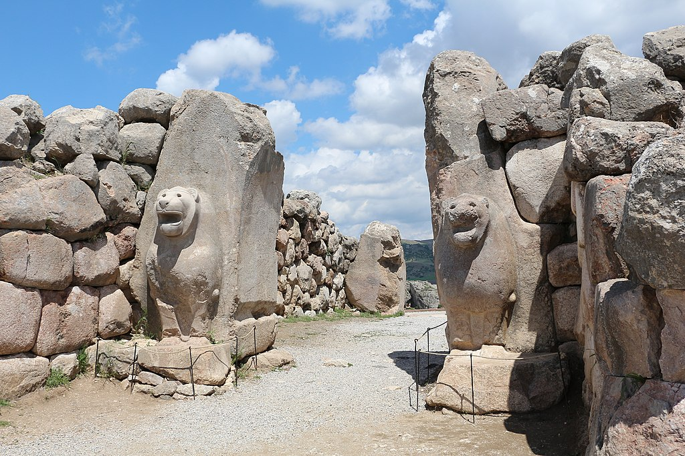Antik Çağ, Helenistik Dönem ve Bizans Dönemi
Anadolu'nun sahil şeridinde MÖ 1200 yıllarında büyük ölçüde Aiol, İyon ve Yunan yerleşimleri başladı. Bu yerleşimciler tarafından Milet, Efes, Smyrna ve Byzantium gibi çok sayıda önemli şehir kuruldu. Son olarak Yunan koloniciler tarafından MÖ 657'de Megara kenti ortaya çıkarıldı. Yine bu dönemlerde, MÖ 6. yüzyılda, Türkiye'nin şu anki doğu toprakları üzerinde Ermeni Orontid Hanedanı tarafından bir devlet kuruldu.
Anadolu, MÖ 6. ve 5. yüzyıllarda bir Pers devleti olan Ahameniş İmparatorluğu'nun egemenliğine girdi ve bu egemenlik, MÖ 334 yılındaki Makedonya Kralı Büyük İskender'in fetihlerine kadar devam etti. Anadolu'nun içlerine kadar ilerleyen İskender; Frigya, Kapadokya ve en son Kilikya'ya kadar ulaştı. Ardından, İskenderun civarında (Antakya) gerçekleşen İssos Savaşı'nda ve akabinde Irak civarında meydana gelen Gaugamela Muharebesi'nde Ahameniş hükümdarı III. Darius'u perişan etti. Daha sonra Pers Kralı III. Darius'u devirdi ve Ahameniş İmparatorluğu'nu tamamen fethetti. Büyük bir yenilgiye uğrayan Darius, Fırat'ın doğusuna kadar sürüldü ve böylece Anadolu'daki Pers hakimiyeti son bulmuş oldu.
Büyük İskender döneminde kültürel kaynaşma ve Helenleştirme hareketi başlatıldı. MÖ 323'te İskender'in Babil'deki ani ölümünün ardından Anadolu bölünerek küçük Helenistik krallıklar ortaya çıktı. Tüm bu krallıklar, MÖ 1. yüzyıl ortalarında Roma Cumhuriyeti'nin bir parçası haline geldi. Büyük İskender'in, fetihleriyle başlatmış olduğu Helenleştirme hareketi ise Roma İmparatorluğu döneminde hızlandırıldı. Bu nedenle daha önceki yüzyıllarda var olan Anadolu dilleri ve kültürlerinin nesli tükenerek yerini Yunan dil ve kültürüne bıraktı.
324 yılında Roma İmparatoru I. Konstantin, imparatorluğun başkentini Byzantium'a taşıdı ve şehrin adını Nova Roma olarak değiştirdi. İmparator I. Theodosius'un (379-395) iki erkek çocuğu, babalarının 395'te ölmesinin ardından Roma İmparatorluğu'nu Doğu ve Batı olmak üzere ikiye bölerek paylaştılar. Başkenti Roma olarak kalan Batı Roma İmparatorluğu, 476'da yıkıldı. Halk arasında Konstantinopolis (İstanbul) olarak yaygınlaşan şehir ise, Doğu Roma İmparatorluğu'nun başkenti oldu. Doğu Roma İmparatorluğu, daha sonraki yıllarda Bizans İmparatorluğu olarak anılmaya başladı, günümüz Türkiye topraklarının önemli bir kısmında hakimiyet kurdu ve Osmanlı Türklerinin İstanbul'u ele geçirdiği 1453 yılına kadar varlığını sürdürdü.
Selçuklular ve Osmanlı İmparatorluğu
Oğuz Türkleri, Müslüman olduktan sonra İslam dünyası çevrelerine daha yakın yerlerde ikamet ettiler ve 9. yüzyılda Hazar Denizi ile Aral Gölü'nün kuzeyine yerleşmeye başladılar. 10. yüzyıl itibarıyla Selçuklular, Pers yurdunu da sınırları içine katarak, atalarının vatanı Orta Asya'dan batıya doğru göç etmeye başladılar ve Büyük Selçuklu Devleti'ni kurdular.
6. yüzyılda Bizans'ın kilise olarak yaptırdığı Ayasofya, sonradan camiye ve müzeye çevrildi, ardından tekrar camiye çevrildi.
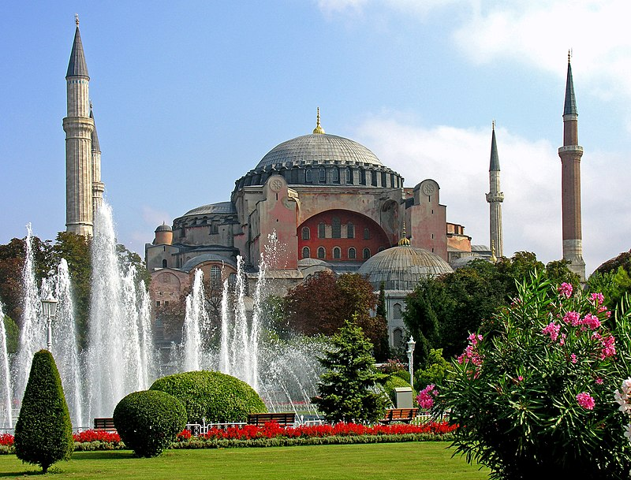11. yüzyılın ikinci yarısında Selçuklular, Anadolu'nun doğu bölgelerine yerleşmeye ve akınlar yapmaya başladılar. 1071'de, Sultan Alp Arslan döneminde, Selçuklu Türkleri ile Bizans İmparatorluğu arasında yapılan Malazgirt Meydan Muharebesi'nden sonra gelen Selçuklu zaferiyle birlikte Anadolu toprakları üzerinde Türkleştirme ve İslamlaşma hareketi başladı. Bu hareketle birlikte Anadolu'da Türk dilleri ve İslam tanıtılarak yaygın hâle geldi. Böylece bölgede yaygın olan Hristiyanlık ve Yunanca, yerini yavaş yavaş İslam ve Türk kültürüne bıraktı.
Konstantinopolis kentinin ve Doğu Roma İmparatorluğu'nun "Büyük" lakabıyla anılan kurucusu I. Konstantin
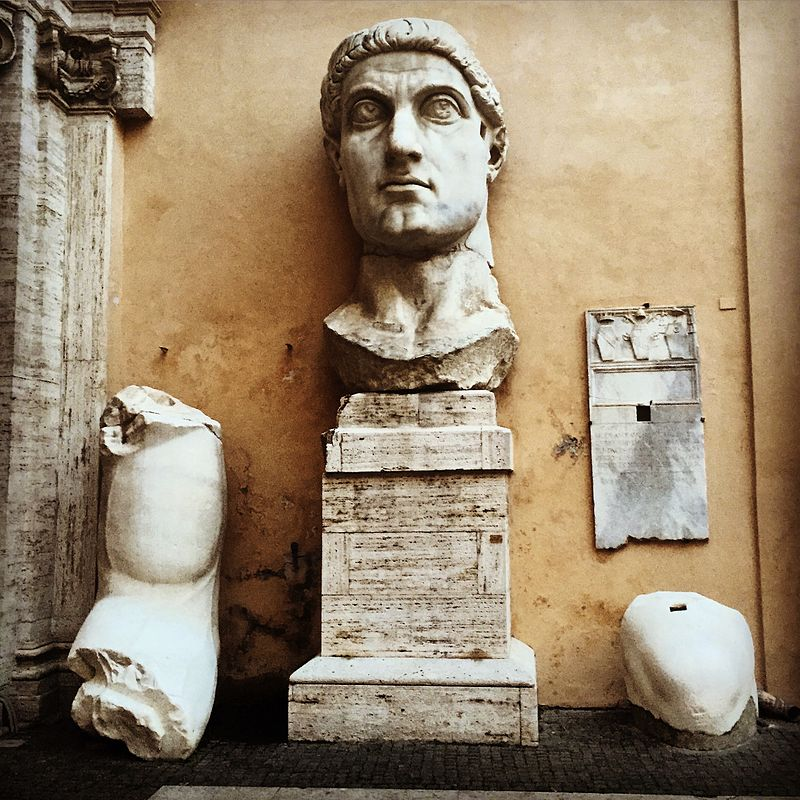Büyük Selçuklu İmparatorluğu'nun parçalanmasının ardından, Anadolu'da diğer Türk beyliklerinin üzerinde hakimiyet kuran Anadolu Selçuklu Sultanlığı, uzunca bir süre Anadolu'yu yönetti. Başkenti İznik olan Anadolu Selçuklular, Birinci Haçlı Seferi sırasında İznik şehrinin Bizans'ın eline geçmesiyle Sultan I. Kılıçarslan tarafından 1097 tarihinde başkentini Konya'ya taşımıştır ve bu tarihten itibaren Konya, Selçuklu Devleti'nin başkenti olmuştur. Sultan I. Alaeddin Keykubad döneminde altın çağını yaşayan Selçuklular, I. Alaeddin'in ölümünün ardından duraklama sürecine girdi.
I. Melikşah'ın 1092'deki ölümü üzerine Büyük Selçuklu İmparatorluğu'nun sınırları
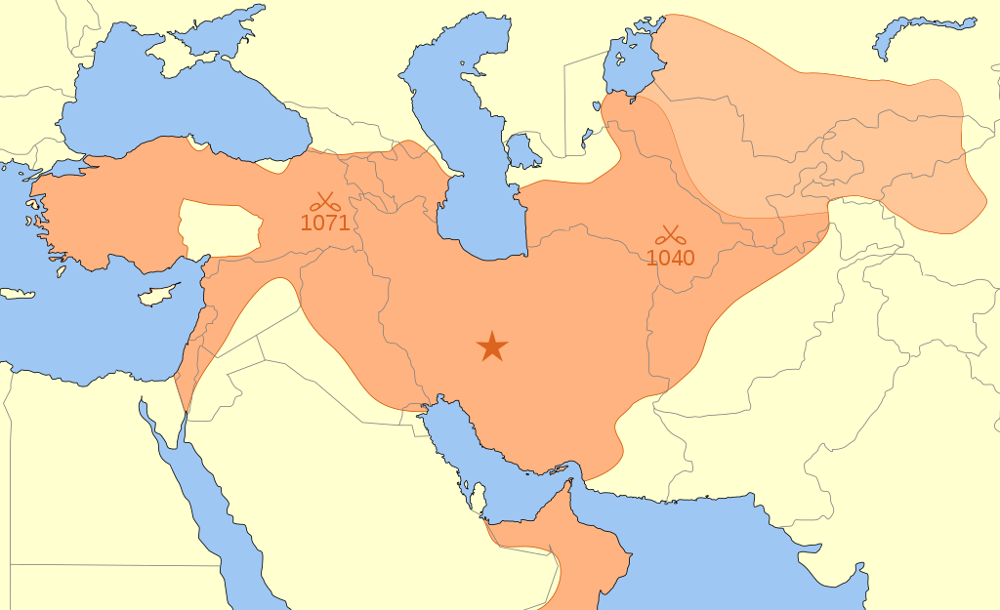Alaeddin Keykubad'ın ölümünü fırsat bilen Moğollar, Selçukluların doğu sınırına saldırarak Anadolu içlerine girmeye çalıştılar. Nitekim 1243'te Anadolu Selçuklu Devleti ile Baycu Noyan komutasındaki Moğollar arasında gerçekleşen Kösedağ Muharebesi sonucunda gelen yenilgiyle Anadolu, Moğol hakimiyetine girmiştir ve Anadolu Selçuklu Devleti zayıflayıp yerini Türk beyliklerine bırakmıştır. Bu beylikler arasında, Söğüt ve Bilecik çevresinde kurulu olan Osmanoğulları Beyliği, 13. yüzyılın sonlarına doğru bağımsızlığını ilan etmiştir.
Anadolu Selçuklu döneminden kalma İnce Minareli Medrese (Konya, Türkiye)
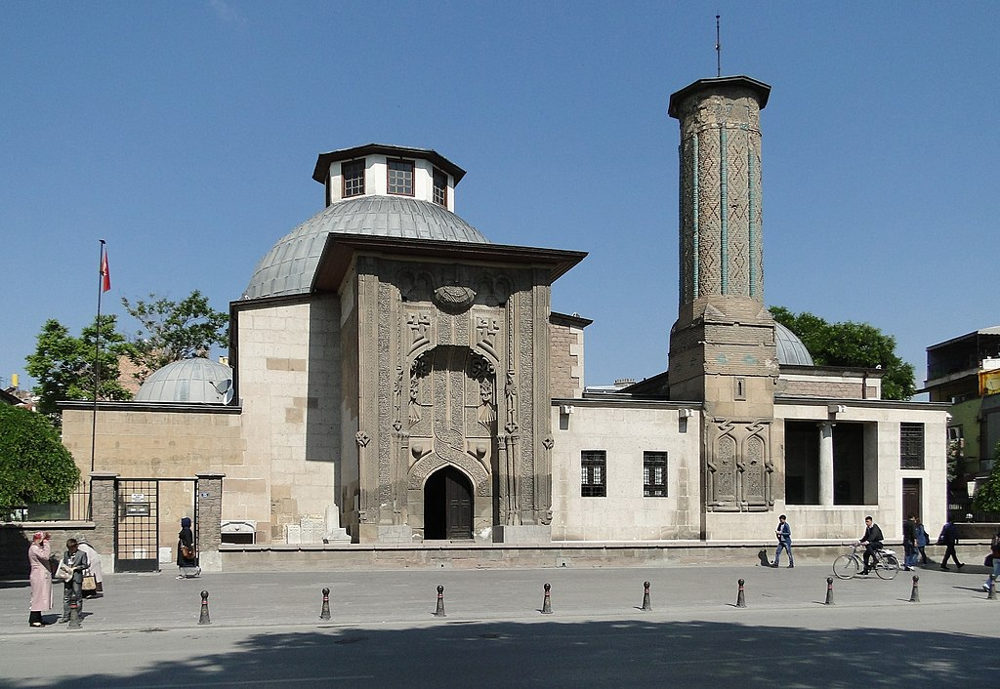Osman Gazi'nin başında olduğu Osmanoğulları Beyliği, sonraki yıllarda gittikçe büyüyerek Anadolu, Balkanlar, Kuzey Afrika ve Levant üzerinde hâkimiyet kurdu. 1453 yılında, II. Mehmed öncülüğünde Bizans İmparatorluğu'nun başkenti Konstantinopolis fethedildi ve imparatorluk tarihe karıştı. Bu olaydan sonra Osmanlılar, bir imparatorluk hâline geldi.
1514 yılında I. Selim, Çaldıran Muharebesi ile Safevî hükümdarı Şah İsmail'i yenerek imparatorluğun sınırlarını doğu yönünde genişletti. 1517'de de Levant, Mısır ve Cezayir'i ele geçirdi ve Mısır'da hüküm süren Memlûk Sultanlığı'nı yıkarak İslam halifeliğinin Osmanlı İmparatorluğu'na geçmesini sağladı. Ardından Kızıldeniz, Umman Denizi ve Basra Körfezi üzerinde Osmanlı ve Portekiz imparatorlukları arasında, Hint Okyanusu'nda üstünlüğü ele geçirmek için bazı çeşitli deniz muharebeleri yapıldı. Portekizlilerin Hindistan üzerinde egemenlik sağlaması Osmanlı tarafından bir tehdit olarak algılandı. Çünkü 15. yüzyıl sonlarındaki Coğrafi Keşifler sayesinde Ümit Burnu ve Amerika kıtasının keşfedilmesi, Osmanlı'nın elinde tuttuğu Doğu Asya ile Batı Avrupa arasında ticareti sağlayan eski ticaret yollarının önemini yitirmesine neden olup Osmanlı ekonomisini olumsuz yönde etkilemiştir.
İstanbul'un Fethi (1453) sırasında, II. Mehmed komutasında Osmanlı donanmasının Haliç'e indirilmesini tasvir eden tablo (Fausto Zonaro)

Osmanlı İmparatorluğu, 16. ve 17. yüzyılda, özellikle I. Süleyman döneminde tarihinin zirvesine ulaştı. Bu dönemde batıda Kutsal Roma Cermen İmparatorluğu'na doğru topraklar genişletilerek Balkanların tamamı, Orta Avrupa ve Lehistan'ın güney kısmı ele geçirildi. Osmanlı donanması, denizde çeşitli rekabetlere girerek başarılar kazandı. 1538'de yapılan Preveze Deniz Muharebesi'nde Barbaros Hayreddin Paşa'nın Haçlıları mağlup etmesinden sonra imparatorluğun Akdeniz'deki kontrolü arttı. Doğuda ise Safevî Devleti ile mezhep farklılıklarından ve toprak anlaşmazlıklarından kaynaklanan bazı çatışmalar, zaman zaman savaşa dönüşerek 16. ve 18. yüzyıl arasında devam etti.
Preveze Deniz Muharebesi (1538)

Osmanlı İmparatorluğu, Batı Avrupa'da gerçekleşen Rönesans, Bilimsel Devrim, Aydınlanma Çağı ve Sanayi Devrimi gibi yeni gelişmeleri ülkesine getiremeyerek çağın gerisinde kaldı. Kutsal İttifak Savaşları'nın bitmesiyle 1699'da imzalanan Karlofça Antlaşması sonrasında Osmanlı İmparatorluğu yavaşça gerilemeye başladı. Yapılan pek çok ıslahat ve 19. yüzyılda ilan edilen Tanzimat Fermanı, ülkenin modernleşmesini amaçladı; ancak başarılı olamadı. Bunun yanı sıra, ülkede toprak bütünlüğünü korumak için geliştirilen, farklı dinî ve etnik kökenlere sahip kişilerin bir arada yaşaması fikrini içeren Osmanlıcılık akımı da başarıya ulaşamayarak dağılmanın önüne geçemedi. 1854'te Kırım Savaşı sırasında Osmanlı İmparatorluğu, ilk kez dış borçlanmaya gitti; ancak alınan borçlar ödenemedi. Sonraki 20 yıl içinde yüksek seviyelere ulaşarak ekonominin iflasın eşiğine gelmesine sebep oldu ve Osmanlı hükûmetini zor durumda bıraktı. Bunu 1875-78 Doğu Krizi ve 1877-78 Osmanlı-Rus Savaşı gibi felaketler izledi. Sonuç olarak Osmanlı ekonomisi, borçlarını ödeyemeyerek harap duruma gelince, alacaklı ülkeler tarafından 1881'de borçların tahsilatını sağlayacak Düyun-u Umumiye kuruldu. Böylece Osmanlı Devleti'nin gelirlerinin kontrolü, alacaklı ülkelerin eline geçti. 20. yüzyıl başlarında Osmanlı İmparatorluğu, Avrupalı güçlerle karşılaştırıldığında sanayileşememiş ve gelişmemiş bir ülke konumuna geldi. Yine de, Osmanlılar en uzak vasalları olan Açe Sultanlığı'na asker gönderirken Güneydoğu Asya'da bile nüfuz sahibiydiler. Endonezya'daki Sumatra'da. Açe'deki kuvvetlerine, Atlantik ve Hint Okyanuslarını geçen Portekizliler Malacca Sultanlığı'nı işgal ettiler ve Latin Amerika'dan geçip Filipinler'deki eski Müslüman Manila'yı işgal eden İspanyollar karşı çıktı., çünkü bu İberyalı güçler, Osmanlı-Habsburg savaşları olarak bilinen Osmanlı Hilafeti'ne karşı bir dünya savaşı yürüttüler.
Osmanlı İmparatorluğu'nun duraklama döneminden gerileme dönemine girmesine neden olan Karlofça Antlaşması müzakereleri (1699)
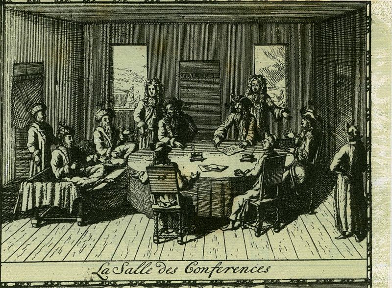Osmanlı İmparatorluğu'nun topraklarının sınırları, askeri gücü ve zenginlik düzeyi giderek azalınca, Balkanlarda yaşayan Müslümanlar, gördükleri eziyetler sebebiyle Anadolu'ya göç etmeye başladı. Aynı şekilde Rusların Kafkasya topraklarını ele geçirmesi sonucunda buradaki Müslümanlar da Anadolu'ya yöneldi. İmparatorluğun yine son zamanlarında milliyetçilik isyanlarının çıkmasıyla milletler arasında çeşitli etnik gerginlikler yaşandı; bu etnik gerginlikler Ermeni Sorunu gibi çeşitli sorunları ortaya çıkardı. Sultan II. Abdülhamid'in aşırı otoriter yönetimine bir tepki olarak gelişen Jön Türk hareketinin 1908'de yaptığı devrimle II. Meşrutiyet ilan edildi. Ardından 5 Ekim 1908'de Bulgaristan'ın resmen bağımsız olması ve 6 Ekim 1908'de Avusturya-Macaristan'ın Bosna'yı tek taraflı ilhakı, ülkedeki kaos ortamını büyüttü. Bu olayları, pek çok canın ve toprağın kaybına sebep olan Trablusgarp Savaşı (1911-12) ile Balkan Savaşları (1912-13) izledi. 23 Ocak 1913'te, I. Balkan Savaşı sırasında gerçekleşen Bâb-ı Âli Baskını, Üç Paşalar'ı başa getirdi ve yönetimi ele geçirmelerine yol açtı.
Osmanlı İmparatorluğu, I. Dünya Savaşı'na İttifak Devletleri'nin yanında girdi ve savaştan yenik çıktı. Savaş sırasında Ermenilerle yaşanan etnik gerginliklerin tırmanması üzerine çıkarılan Tehcir Kanunu ile Ermeniler, Doğu Anadolu Bölgesi'nden Suriye'ye devlet eliyle göç ettirildi. Göçlerde farklı kaynaklara göre 300.000 ile 1.500.000 arasında Ermeninin hayatını kaybettiği iddia edildi. Bu ölümler, çeşitli kaynaklar tarafından Ermeni Soykırımı olarak tanımlandı. Türk tarafı ise olayların soykırım olmadığını ifade ederek Ermenilerin yalnızca yerlerinin değiştirildiğini belirtti. Ermenilerin yanı sıra, imparatorlukta savaş devam ederken Rum ve Süryaniler de öldürüldü ve bu olaylar da bazı kaynaklar tarafından soykırım olarak tanımlandı.
Savaşın ardından imparatorluğa bağlı milletler ayrılarak çeşitli yeni devletler kurdular. 30 Ekim 1918'de Osmanlı İmparatorluğu, İtilaf Devletleri ile Mondros Ateşkes Anlaşması'nı imzaladı. 10 Ağustos 1920'de imzalanan Sevr Antlaşması ise Osmanlı topraklarını İtilaf Devletleri arasında paylaştırdı, ancak yürürlüğe giremedi.
6. Osmanlı Ordusu, Irak'ta Kut'ül-Amare Kuşatması sırasında (I. Dünya Savaşı, 1916)
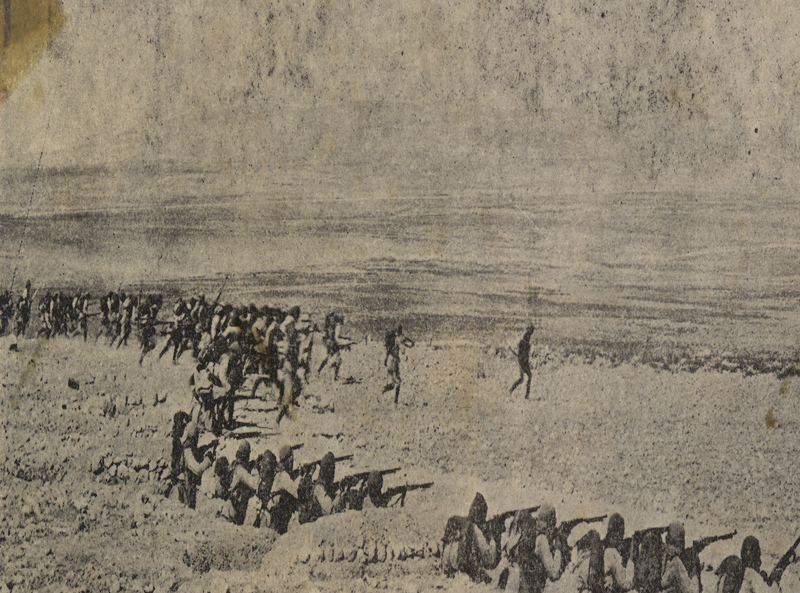Türkiye Cumhuriyeti
I. Dünya Savaşı bitiminde imzalanan Mondros Antlaşması'ndan sonra İtilaf Devletleri tarafından İstanbul, İzmir ve diğer Osmanlı topraklarının işgali, Türk Ulusal Hareketi'ni ortaya çıkardı. Çanakkale Savaşı'nın öne çıkan isimlerinden biri olan Mustafa Kemal Paşa'nın 19 Mayıs 1919'da Samsun'a çıkışı ile Sevr Antlaşması'nın getirdiği şartları iptal edip Mîsâk-ı Millî sınırları içinde kalan ülke topraklarının bütünlüğünü korumayı amaçlayan Türk Kurtuluş Savaşı başlatıldı.
18 Eylül 1922 itibarıyla ülkedeki tüm düşman kuvvetleri kovuldu ve Nisan 1920'den beri kendisini ülkenin meşru hükûmeti ilan eden Ankara merkezli Türk rejimi, eski Osmanlı'dan gelen sistemi yasallaştırarak yeni cumhuriyetçi siyasi sisteme geçmeye başladı. 1 Kasım 1922 tarihinde Türkiye Büyük Millet Meclisi, saltanatı kaldırdı ve 623 yıllık monarşik Osmanlı İmparatorluğu, resmen tarih sahnesinden silindi. 24 Temmuz 1923'te imzalanan Lozan Antlaşması, Osmanlı İmparatorluğu'nun devamı niteliğindeki yeni Türkiye Cumhuriyeti'nin uluslararası alanda tanınmasını sağladı ve 29 Ekim 1923'te yeni başkent Ankara'da resmen cumhuriyet ilan edildi. Lozan Antlaşması sonrasında antlaşma maddeleri gereğince yapılan Türkiye-Yunanistan nüfus mübadelesi kapsamında Türkiye'deki 1,1 milyon Rum ile Yunanistan'daki 380 bin Türk yer değiştirdi.
Saltanatın kaldırılmasının ardından son Osmanlı padişahı VI. Mehmed Vahdettin, İstanbul'u terk ediyor. (1922)
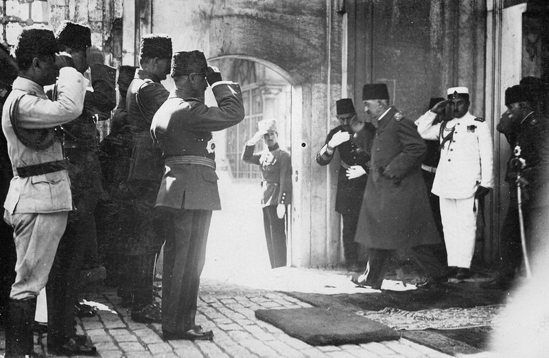Türkiye Cumhuriyeti Devleti'nin kurucusu ve ilk cumhurbaşkanı olan Mustafa Kemal, eski Osmanlı-Türk devletini yeni bir laik cumhuriyete dönüştürme amacı içeren birçok devrim yaptı. Bu devrimlerin bir parçası olarak saltanat ve ardından hilâfet kaldırıldı, kadınlara seçme ve seçilme hakkı tanındı, Latin alfabesi kullanılmaya başlandı ve diğer birçok değişiklik yapıldı. Türkiye Büyük Millet Meclisi, 1934 yılında çıkan Soyadı Kanunu ile kendisine "Atatürk" soyadını verdi. Ağa olarak adlandırılan toprak beyleri tarafından yönetilen ve feodal düzenler olan Kürt ve Zaza aşiretleri ve ülkenin diğer yerlerinde bulunan çoğunlukla İslamcı bazı gruplar, bu devrimlere itiraz etti ve laikliğe muhalefet nedeniyle çıkan Şeyh Said ve Menemen isyanları ile toprak reformu nedeniyle çıkan Dersim İsyanı, Türk güvenlik güçleri tarafından bastırıldı.
II. Dünya Savaşı'nda (1939-1945) Türkiye, uzun süre tarafsızlığını korudu; ancak savaşın son aylarında, 23 Şubat 1945 tarihinde Müttefik Devletler'in yanında yer aldı. 26 Haziran 1945'te ise Birleşmiş Milletler'in kurucu üyelerinden biri oldu. II. Dünya Savaşı'ndan sonra Yunanistan'da çıkan komünist isyanının bastırılmasında karşılaşılan zorluklar ve Sovyetler Birliği'nin Türk Boğazları'nda askeri üs talep etmesi, Amerika Birleşik Devletleri'nin 1947'de Truman Doktrini'ni ilanıyla sonuçlandı. Doktrin, Türkiye ve Yunanistan güvenliğini sağlamayı amaçlayarak askeri ve ekonomik destek sağladı. Her iki ülke de 1948 yılında Avrupa ekonomisinin yeniden inşası için Marshall Planı ve OEEC'ye dahil edildi, daha sonra 1961 yılında OECD'nin kurucu üyesi haline geldi.
Kore Savaşı'na (1950-53) Birleşmiş Milletler kuvvetleri ile birlikte katılan Türkiye, 1952 yılında Sovyetler Birliği'ne karşı NATO'ya katıldı. 15 Temmuz 1974'te Kıbrıs'ta gerçekleşen darbe, EOKA-B'nin faaliyetleri, Enosis (adayı Yunanistan ile birleştirme) planları ve yaşanan toplumlar arası çatışmanın tırmanması sonucunda Türkiye, 20 Temmuz 1974'te adaya asker çıkardı. Dokuz yıl sonra Kuzey Kıbrıs Türk Cumhuriyeti kurularak ada ikiye bölündü, ancak ülke yalnızca Türkiye tarafından tanındı.
Türkiye Cumhuriyeti'nin tek partili dönemi, 1946 yılında son buldu. Ardından gelen çok partili demokrasi dönemi 1960, 1971, 1980 ve 1997 yıllarındaki askerî müdahalelerle kesintiye uğradı. 1980'li yıllarda Türk ekonomisinin liberalleştirilmesinden bu yana ülke, ekonomik büyüme ve siyasi istikrar yakaladı. 1984'ten itibaren PKK, Türk hükûmetlerine karşı ayaklanma ve saldırı kampanyalarına başladı; tarafların çatışmaları sonucunda resmî verilere göre 40 binden fazla insan öldü. 2012'de taraflar arasında barış görüşmeleri başladı, ancak 2015'te görüşmeler sona erdi ve yeniden çatışma hâline dönüldü. 2013'te Gezi Parkı'ndaki düzenlemeler nedeniyle başlayan protestolar, daha sonra hükûmet karşıtı protestolara dönüşerek birçok ilde patlak verdi ancak hükûmet tarafından bastırıldı. Ayrıca 15 Temmuz 2016'da, Türkiye'de başarısız bir darbe girişimi meydana geldi.
Mustafa Kemal Atatürk, Türkiye Cumhuriyeti'nin kurucusu ve ilk cumhurbaşkanıdır.
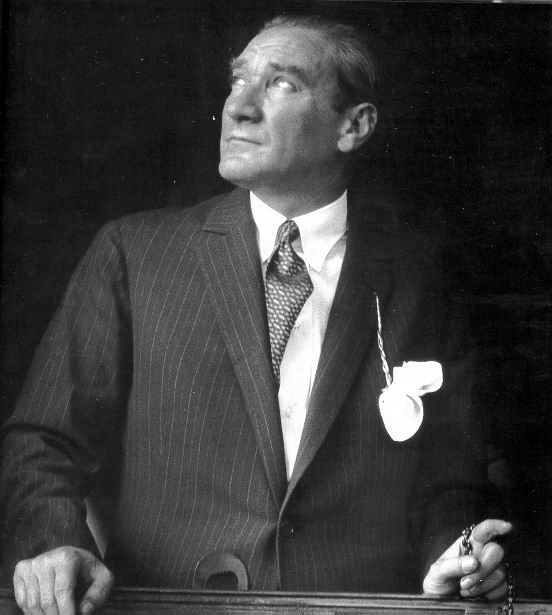